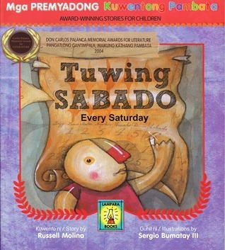
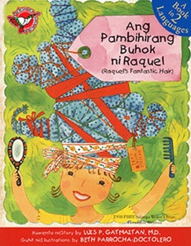

| Picture | Description |
|---|---|
|  |
Tuwing SabadoBy Russell MolinaSiya ay isang batang katulad ninyo. Ngunit mayroon siyang kuwentong medyo naiiba. Tuwing Sabado, siya at ang kanyang nanay ay maagang dalahin, at bumibiyahe nang malayo. Dadalawin nila ang isang mahalagang tao sa isang espesyal na lugar. Alamin sa kanyang kuwento kung sino and taong ito at kung saan nila dadalawin ito, gayundin kung ano ang espesyal na okasyon na nagaganap sa kanila tuwing Sabado. 4.39 stars as rated on GoodReads RUSSEL MOLINA is a Filipino children’s book author and graphic novelist. Published by Adarna House on January 1, 2009 |
Mahabang Mahabang MahabaBy Genaro R. Gojo CruzMahabang-mahabang-mahaba ang pangalan ko. 4.37 stars as rated on GoodReads GENARO R. GOJO CRUZ Nagwagi si Gojo Cruz ng mga gantimpala sa pagsulat tulad ng Pambansang Gawad Ka Amado, 100 Years of Filipino Migration to Hawaii Literary Contest 2006, Gawad Collantes-Surian sa Pagsulat ng Sanaysay, Talaang Ginto: Gawad KWF sa Tula-Gantimpalang Collantes, Ninoy Poetry Writing Contest at iba pa. Dalawang ulit din siyang naging "Makata ng Taon" noong 2004 at 2007 na ipinagkaloob ng Komisyon sa Wikang Filipino (KWF). Ilan sa kanyang mga kuwentong-pambata ay binigyang-parangal ng Don Carlos Palanca Memorial Awards for Literature, PBBY-Salanga Writers Prize, Romeo Forbes Children's Story Writing Competition, Gig Book Storywriting Contest at Gawad Panitikang Pangkalusugan. Nailathala ang kanyang mga tula at kuwentong pambata sa Junior Inquirer Magazine, Liwayway, Pambata Magazine, at mga libro sa elementarya. Published by Adarna House on January 1, 2010 | |
Ang Madyik Silya ni TitoyBy Russell MolinaNandito na ang madyik silya ni Titoy! Kaya nitong maging kotse, eroplano, o tren. Sumamang maglakbay at tuklasin kung paano nalagpasan ni Titoy ang kapansanan sa tulong ng kaniyang mapaglarong imahinasyon. 4.00 stars as rated on GoodReads RUSSEL MOLINA is a Filipino children’s book author and graphic novelist. Published by Adarna House on January 1, 2002 | |
|  | Ang Pambihirang Buhok ni RaquelBy Luis P. GatmaitanSa mata ng kaniyang pinsan, si Raquel ay maraming kanais-nais na katangian. Nagtataglay din siya ng buhok na pambihira at makulay. Pero may lihim si Raquel. Ano ang matutuklasan sa kaniya na lalong hahangaan? 4.32 stars as rated on GoodReads LUIS P. GATMAITAN, MD is a medical doctor and an author of more than 40 children's books, some of which have been translated into Nihongo, Thai, and Bahasa Indonesia. He chaired the Philippine Board on Books for Young People (PBBY) and now sits on the council of the National Council for Children's Television (NCCT) as a child development specialist. Known as Tito Dok to his readers and listeners, he hosts a weekly radio storytelling program, Wan Dey Isang Araw at 702 DZAS of the Far Eastern Broadcasting Company. In 2003, he was one of the recipients of The Outstanding Young Men of the Philippines (TOYM). He was inducted into the Hall of Fame of the Don Carlos Palanca Memorial Awards for Literature in 2005. Published by Adarna House on January 1, 1999 |
The God Stealer and Other StoriesBy F. Sionil JoséThe God Stealer, F. Sionil José's most widely anthologized fiction, is a moving story of a friendship. An American and a Filipino go to the Cordilleras to look at the rice terraces which were built by the Filipino's ancestors. There, they find the meaning of their friendship, how it defines the relationship between the colonizer and the colonized. 3.98 stars as rated on GoodReads FRANCISCO SIONIL JOSE was born in 1924 in Pangasinan province and attended the public school in his hometown. He attended the University of Santo Tomas after World War II and in 1949, started his career in writing. Since then, his fiction has been published internationally and translated into several languages including his native Ilokano. He has been involved with the international cultural organizations, notably International P.E.N., the world association of poets, playwrights, essayists and novelists whose Philippine Center he founded in 1958. Published by Adarna House on January 1, 1968 |